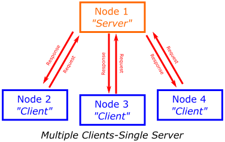
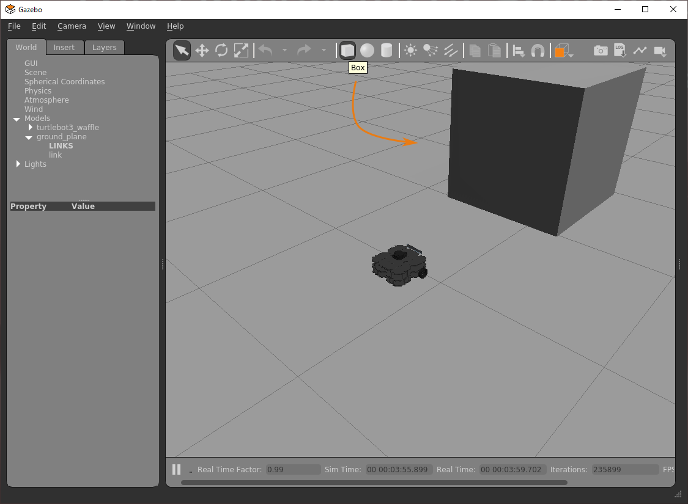
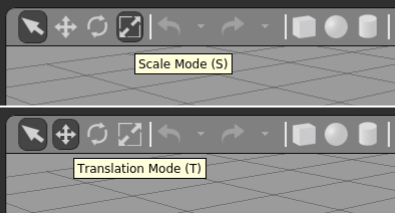

Week 4: ROS Services
Info
You should be able to complete most of the exercises on this page within a two-hour lab session, but you might need to spend a bit more time on the final exercise.
Introduction¶
Aims¶
In this session you will learn about another communication method that can be used to transmit data/information and invoke actions across a ROS Network: ROS Services. You will learn how ROS Services can be used in combination with the standard publisher/subscriber principles that you already know about to control a robot more effectively for certain operations.
Intended Learning Outcomes¶
By the end of this session you will be able to:
- Recognise how ROS Services differ from the standard topic-based publisher-subscriber approach, and identify appropriate use-cases for this type of messaging system.
- Implement Python node pairs to observe services in action, and understand how they work.
- Invoke different services using a range of service message types.
- Develop Python Service nodes of your own to perform specific robotic tasks.
- Harness Services, in combination with LiDAR data, to implement a basic obstacle avoidance behaviour.
- Demonstrate your understanding of ROS so far by developing a Python node which incorporates elements from this and previous parts of this course.
Quick Links¶
- Exercise 1: Creating a Service Server in Python and calling it from the command-line
- Exercise 2: Creating a Python Service Client Node
- Exercise 3: Making and calling your own Service
- Exercise 4: Approaching an object using a Service and closed-loop control
Additional Resources¶
- The Service Server Code (for Exercise 1)
- The Service Client Code (for Exercise 2)
- Creating a
/scanCallback Function
Getting Started¶
Step 1: Launch WSL-ROS
Launch your WSL-ROS environment by running the WSL-ROS shortcut in the Windows Start Menu (if you haven't already done so). Once installed, the Windows Terminal app should launch with an Ubuntu terminal instance ready to go (TERMINAL 1).
Step 2: Restore your work
When prompted (in TERMINAL 1), enter Y to restore your work from last time1.
Step 3: Launch VS Code
Follow these steps to launch VS Code correctly within the WSL-ROS environment.
Step 4: Launch the Robot Simulation
From TERMINAL 1, launch the TurtleBot3 Waffle "Empty World" simulation:
TERMINAL 1:
...and then wait for the Gazebo window to open:
Remember
You can also use the tb3_empty_world command-line alias to launch the simulation, rather than using that long roslaunch command!
An Introduction to Services¶
So far, we've learnt about ROS topics and messages, and how individual nodes can access data on a robot by simply subscribing to topics that are being published by any other node on the system. In addition to this, we also learnt how any node can publish messages to any topic: this essentially broadcasts the data contained in the message across the ROS Network, making it available to any other node on the network that may wish to access it.
Another way to pass data between ROS Nodes is by using Services. These are different to messages in that "Service calls" (that is, the process of requesting a service) occur only between one node and another:
- One node (a Service Client) sends a Request to another node.
- Another node (a Service Server) processes that request, performs an action and then sends back a Response.

Services are Synchronous (or sequential): When a ROS node sends a request to a service (as a Service Client) it can't do anything else until the service has been completed and the Service Server has sent a response back. This can be useful for a variety of reasons:
-
Discrete, short-duration actions:
- A robot might need to do something before it can move on to something else, i.e.: it needs to see something before it can move towards it.
- High definition cameras generate large amounts of data and consume battery power, so you may wish to turn a camera on for a specific amount of time (e.g. until an image has been captured) and then turn it off again.
-
Computations: Remember that ROS is network-based so you might want to offload some computations to a remote computer or a different device on a robot, e.g.:
- A client might send some data and then wait for another process (the server) to process it and send back the result.
It's also worth noting that any number of ROS Client nodes can call a service, but you can only have a single Server providing that particular service at any one time.

Question
Can you think of any other scenarios where this type of communication protocol might be useful?
You'll explore how all this works in the next two exercises, where you will create service Server and Client nodes in Python, launch them from the command-line and observe the outcomes.
Exercise 1: Creating a Service Server in Python and calling it from the command-line¶
To start with, let's set up a service and learn how to make a call to it from the command-line to give you an idea of how this all works and why it might be useful.
-
First open up a new terminal instance (TERMINAL 2) and create a package called
week4_servicesusing thecatkin_create_pkgtool as you have done in previous weeks:-
Navigate to the
catkin_ws/srcdirectory:
TERMINAL 2:
-
Create the
week4_servicespackage and definerospy,geometry_msgsandtuos_ros_msgsas dependencies:
TERMINAL 2:
-
Run
catkin buildon the package:
TERMINAL 2:
-
And then re-source your environment:
TERMINAL 2:
Tip
We're having to do this
source ~/.bashrcthing a lot aren't we?! We've created a handy alias for it... usesrcinstead!
-
-
Then, navigate to your package
srcfolder that should have been created bycatkin_create_pkg:
TERMINAL 2:
-
Create a file called
move_server.py(usingtouch) and set this to be executable (usingchmod). -
Then, open the file in VS Code, copy and paste this code and then save it.
Note
It's really important that you understand how the code above works, so that you know how to build your own service Servers in Python. Make sure you read the code annotations thoroughly.
-
Return to the terminal window and launch the node using
rosrun:
TERMINAL 2:
You should see the message:
-
Then open up a new terminal window (TERMINAL 3)
-
We can use the
rosservicecommand to view all the services that are currently active on our system:
TERMINAL 3:
You should see the
/move_serviceservice that we defined in the Python code:
-
We can find out more about this using the
rosservice infocommand:
TERMINAL 3:
Which should provide the following output:
You may notice that the node name is
/move_service_server, as set in our Python code when we initialised the node:Type tells us the type of message this service uses, and we'll look at this in more detail later.
Args tells us what input arguments we need to supply to the service in order to make a valid service call (or Request). -
We can now call this service from the command-line using the
rosservicecommand again. The autocomplete functionality in the terminal can help us format this message correctly. Type the following text followed by a space and two tabs as illustrated:
TERMINAL 3:
which should autocomplete the rest of the command for us:
-
Press
[ENTER]to issue this command and make a call to the service. You should see the following response: -
Arrange your windows so that you can see both the Gazebo simulation with your robot in, and the terminal that you just issued the
rosservice callcommand (TERMINAL 3). -
In TERMINAL 3 enter the
rosservice callcommand again, but this time setting the input argument totrue. Observe the response to the simulated robot in Gazebo. Switch back to TERMINAL 2 and observe the terminal output here too.
Summary:
You have just created a node in Python to launch a service. This node acted as a Server: sitting idle and waiting, indefinitely, for its service to be called. We then issued the call to the service via the command-line, which then prompted our Service Server to carry out the tasks that we had defined within the Python code, namely:
- Start a timer.
- Issue a velocity command to the robot to make it move forwards.
- Wait for 5 seconds.
- Issue a velocity command to make the robot stop.
- Prepare a Service Response and issue this to the terminal in which we called the service (TERMINAL 3).
Using rossrv¶
In the previous exercise we used rosservice list to identify all the services that were currently active on the ROS system. We then used rosservice info to find out a bit more about the service that we had launched with our Python node (which we called /move_service).
rosservice info /move_service:
Node: /move_service_server
URI: #####
Type: tuos_ros_msgs/SetBool
Args: request_signal
Type tells us the type of message this service uses. Just like a topic message there are two parts to this definition:
tuos_ros_msgs/SetBool
- The service message is part of a package called
tuos_ros_msgs - The message itself is called
SetBool
We can find out more about this using the rossrv command, which has the same usage as the rosmsg command that you have already used previously (for interrogating topic messages). rossrv gives us information about all the service messages that are installed on our system and that are available for us to use in any ROS applications that we create:
TERMINAL 3:
... which gives:The Format of a Service Message¶
As you can see from above, service messages have two parts to them, separated by three hyphens (---). Above the separator is the Service Request, and below it is the Service Response:
bool request_signal <-- Request
---
bool response_signal <-- Response (Parameter 1/2)
string response_message <-- Response (Parameter 2/2)
In order to Call a service, we need to provide data to it in the format specified in the Request section of the message. A service Server (like the Python node we created above) will then send data back to the caller in the format specified in the Response section of the message.
The tuos_ros_msgs/SetBool service message that we're working with here has a one request parameter:
- A boolean input called
request_signal
...which is the only thing we need to send to the Service Server in order to call the service.
There are then two response parameters:
- A boolean flag called
response_signal - A text string called
response_message
...both of these will be returned to the client, by the server, once the Service has completed.
Exercise 2: Creating a Python Service Client Node¶
As well as calling a service from the command-line we can also build Python nodes to do the same thing (i.e. we can build Python Service Client Nodes). In this exercise you will learn how this is done.
-
TERMINAL 3 should be idle, so from here navigate to the
srcfolder within theweek4_servicespackage that we created earlier:
TERMINAL 3:
-
Create a new file called
move_client.pyand make sure that this is executable. -
Launch the file in VS Code, copy and paste this code and then save the file.
Note
Once again, be sure to read the code annotations, and make sure that you understand how this Python Service Client Node works too!
-
Return to TERMINAL 3 and launch the node using
rosrun:
TERMINAL 3:
The response should be exactly the same as observed in Exercise 1.
Exercise 3: Making and calling your own Service¶
In this exercise you will create your own service Server to make the Waffle perform a specific movement for a given amount of time and then stop.
A service message called tuos_ros_msgs/TimedMovement has already been set up to help you do this. Interrogate this using the rossrv command (as described above) to work out how to use this message in your Python Server node.
The service should respond to four different movement commands to invoke four different actions:
"fwd": Move forwards."back": Move backwards."left": Turn left."right": Turn right.
The Server should make the robot perform the desired action for a duration that is also specified within the service message (in seconds).
Procedure:
- Close down the Service Server that is currently running in TERMINAL 2.
-
Create a new node in your
week4_servicespackage:-
Navigate to the
week4_services/srcfolder usingroscd:
TERMINAL 2:
-
You can use the
move_server.pynode that you created earlier as a starting point if you want to. Copy the file and rename ittimed_move_server.pyusing thecpcommand:
TERMINAL 2:
-
-
Open the new
timed_move_server.pyfile in VS Code and modify it as follows:- Change the imports to utilise the correct service message type (
tuos_ros_msgs/TimedMovement). - Modify the
rospy.Servicecall to use theTimedMovementservice message type. -
Develop the
callback_function()to:-
Process the two parameters that will be provided to the server via the
service_requestinput argument.Remember
You can use
rossrv info ...to find out what these two parameters are called, and their data types. -
Make the robot perform the correct action.
- Return a correctly formatted service response message to the service caller.
- Launch your server node using
rosrunfrom TERMINAL 2 and call the service from the command-line using therosservice callcommand in TERMINAL 3, as you did earlier.
-
- Change the imports to utilise the correct service message type (
A recap on everything you've learnt so far...¶
You should now hopefully understand how to use the ROS Service architecture and understand why, and in what context, it might be useful to use this type of communication method in a robot application.
Remember
Services are synchronous and are useful for one-off, quick actions; or for offloading jobs or computations that might need to be done before something else can happen. (Think of it as a transaction that you might make in a shop: You hand over some money, and in return you get a chocolate bar, for example!)
Over the last four sessions we've learnt how to use a range of key ROS tools, and hopefully you're starting to understand how ROS works and how you might approach a robot programming task using this framework. In the final exercise of this session you'll consolidate some of the things that you've done so far:
- How to publish and subscribe to topics.
- How to make a robot move.
- How to interpret Laser Displacement Data from the LiDAR sensor.
- How to invoke an action using a ROS Service.
- How to develop ROS Nodes in Python, and how to use the Python Class Structure.
Manipulating the Environment in Gazebo¶
In order to carry out the last exercise you'll also need to be able to manipulate the robot's simulated environment using some basic tools in Gazebo. First, make sure that there are no active processes running in TERMINALS 2 or 3, but leave the Gazebo simulation in TERMINAL 1 running.
In the Gazebo simulation window, use the "Box" tool in the top toolbar to place a box in front of the robot:

Use the "Scale Mode" button to resize the box and use the "Translation Mode" button to reposition it.

Once you are happy with this, right-click on the object and select "Delete" to remove it from the world.

Exercise 4: Approaching an object using a Service and closed-loop control¶
For this exercise you need to build another Python Server node which must perform the following tasks:
- Make the robot move forwards, towards an object placed in front of it. As you know, you'll do this by publishing velocity commands to the
/cmd_veltopic. - The server node must then stop the robot before it hits the obstacle that you have placed in front of it by subscribing to the
/scantopic and monitoring distance information from the LiDAR sensor telling us how far away the object is. - The server must do this by considering two inputs received from a Service Request:
- The speed (in m/s) at which to approach the object.
- The distance (in meters) at which the robot must stop in front of it.
- A service message called
tuos_ros_msgs/Approachis available for you to use for this exercise. Use this to build your service server. Remember, you can find out more about this message usingrossrv info. -
We haven't really done much work with the LiDAR data published to the
/scantopic yet, so you might want to consider this suggested approach for building a/scancallback function.Tip
You should use a class structure in your Python code here. Start off with the subscriber node from Week 1 and add code to this to build the functionality required for this exercise.
Wrapping Up¶
In this session you have learnt about ROS Services and why they might be useful for a Robot:
- Services differ from standard topic-based communication methods in ROS in that they are a direct form of communication between one node and another.
- The communication between the two nodes is sequential or synchronous: once a service Caller has called a service, it cannot continue until it has received a response.
- This is useful for controlling quick, short-duration tasks or for offloading computations (which could perhaps also be considered decision making).
Having completed this week's exercises, you should now be able to:
- Create and execute Python Service Servers.
- Create and execute Python Service Callers, as well as call services from the command-line.
- Implement these principles with a range of different service message types to perform a number of different robot tasks.
- Use LiDAR data effectively for basic closed-loop robot control.
- Develop Python nodes which also incorporate principles from the previous three weeks of this course:
- Publishing and subscribing to topics.
- Controlling the velocity and position of a robot.
- Using the Python Class architecture.
- Harnessing ROS and Linux command-line tools.
Saving your work¶
Remember, the work you have done in the WSL-ROS environment during this session will not be preserved for future sessions or across different University machines automatically! To save the work you have done here today you should now run the following script in any idle WSL-ROS Terminal Instance:
This will export your home directory to your University U: Drive, allowing you to restore it at the start of the next session.
-
Remember: you can also use the
wsl_ros restorecommand at any time. ↩
Created: 2022-11-11